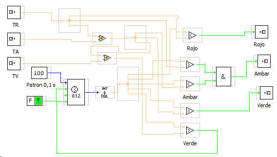
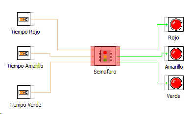

Este bloque simula el comportamiento de un semáforo.
Las entradas son los tiempos de acr¡tivacion de cada salida:
TR: Tiempo en rojo (unidad de tiempo 0.1 s)
TA: Tiempo en ambar (unidad de tiempo 0.1 s)
TV: Tiempo en verde (unidad de tiempo 0.1 s)
Las salidas son las tres señales de tipo booleano que activan las salidas Rojo, Amabar, Verde
El contenido del bloque es el siguiente:

Un montaje básico sería el siguiente:
